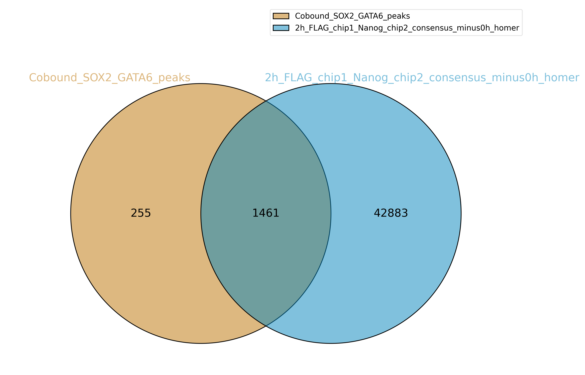
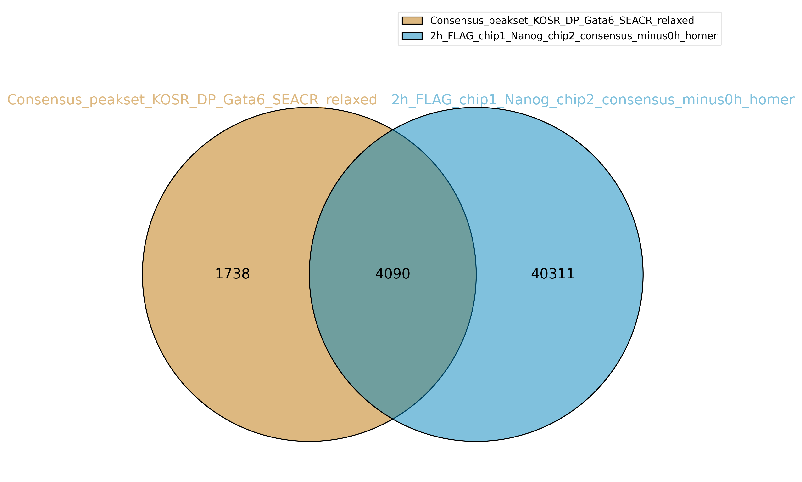
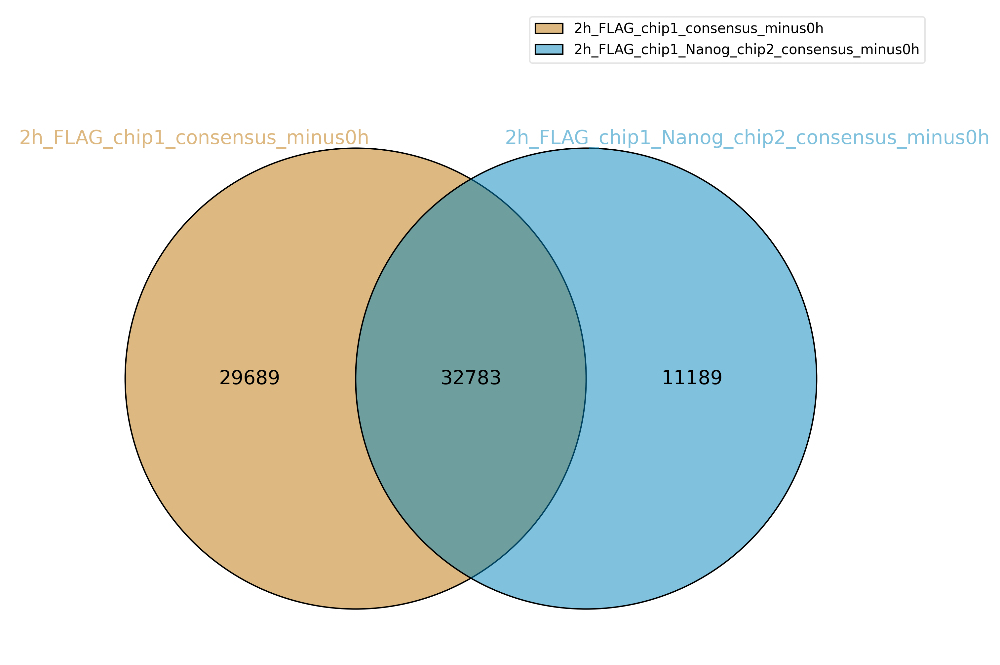
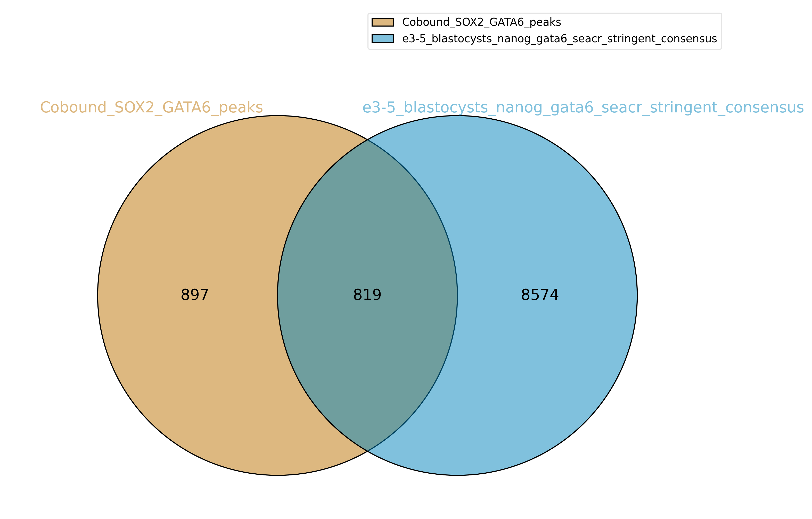

Code
library(cowplot)
library(tidyverse)
#library(matrixStats)
#library(DiffBind)
#library(RColorBrewer)
#library(reshape2)
#library(ChIPseeker)library(cowplot)
library(tidyverse)
#library(matrixStats)
#library(DiffBind)
#library(RColorBrewer)
#library(reshape2)
#library(ChIPseeker)44389 consensus peaks were called in both 2h_FLAG_chip1_nanog_chip2 replicates, using macs2 with narrow peak option and q-value cut off of 0.01 After subtracting any consensus peaks called in both 0h_FLAG_chip1_nanog_chip2 replicates, 44313 consensus peaks remained
Venn diagrams were produced using the intervene package. See helper script 01_intervene.sh in the scripts folder.
knitr::include_graphics("../results/01_intervene/alba_cobound_sox2_gata6_thompson_2h_chip2_nanog/Intervene_venn_1.png")
knitr::include_graphics("../results/01_intervene/alba_KOSR_DP_gata6_thompson_2h_chip2_nanog/Intervene_venn_3.png")
knitr::include_graphics("../results/01_intervene/thompson_2h_FLAG_chip1_gata6_thompson_2h_chip2_nanog/Intervene_venn_4.png")
This heatmap was produced using deeptools. See helper scripts 01_deeptools_matrix_rechip_alba_enhancers.sh and 01_deeptools_plot_rechip_alba_enhancers.sh in scripts folder.
knitr::include_graphics("../results/01_thompson_rechip/deeptools/01_Gata6_Nanog_rechip_on_pluri_common_nEnd.png")
Homer results under riveiro_et_al_2023/results/01_thompson_rechip/motif_analysis/. See helper script 01_homer_rechip_alba_enhancers.sh
Both 2h chip1 FLAG Gata6 and 2h re-CHIP Nanog have Gata motifs at top. More Sox motifs in top results for 2h Nanog re-CHIP, and Nanog motifs in top.
knitr::include_graphics("../results/01_intervene/alba_cobound_sox2_gata6_thompson_blasto_gata6_nanog/Intervene_venn2.png")